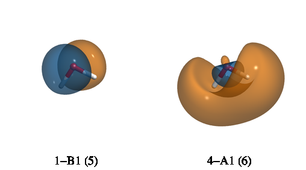

Generation of Cube Files — cubeprop()¶
Code author: Robert M. Parrish, Francesco A. Evangelista and Peter Kraus
Section author: Francesco A. Evangelista and Peter Kraus
- psi4.cubeprop(wfn, **kwargs)[source]
Evaluate properties on a grid and generate cube files.
Added in version 0.5: wfn parameter passed explicitly
- Returns:
None
- Parameters:
wfn (
Wavefunction) – set of molecule, basis, orbitals from which to generate cube files- Examples:
>>> # [1] Cube files for all orbitals >>> E, wfn = energy('b3lyp', return_wfn=True) >>> cubeprop(wfn)
>>> # [2] Cube files for density (alpha, beta, total, spin) and four orbitals >>> # (two alpha, two beta) >>> set cubeprop_tasks ['orbitals', 'density'] >>> set cubeprop_orbitals [5, 6, -5, -6] >>> E, wfn = energy('scf', return_wfn=True) >>> cubeprop(wfn)
Introduction¶
PSI4 has the ability to export cube files that store information about basis functions, molecular orbitals, the electron density, and the electrostatic potential (ESP). Cube files store the value of a scalar quantity on a regular Cartesian grid, and can be visualized with several visualization programs, some of which are free, like VMD (http://www.ks.uiuc.edu/Research/vmd/).
An example utilization of the code is:
molecule h2o {
0 1
O
H 1 1.0
H 1 1.0 2 104.5
}
set basis cc-pvdz
set scf_type df
set freeze_core True
set cubeprop_tasks ['orbitals']
set cubeprop_orbitals [5,6,-5,-6]
E, wfn = energy('scf', return_wfn=True)
cubeprop(wfn)
In this example, the cubeprop()
call after the energy('scf') command
executes the cubeprop code. The array CUBEPROP_TASKS specifies which
tasks should be executed. In this case the task 'orbitals' generates cube
files for orbitals. The CUBEPROP_ORBITALS option specifies that cube files
should be generated only for alpha orbitals 5 (HOMO) and 6 (LUMO) and
beta orbitals 5 (indicated as -5) and 6.
If the option CUBEPROP_ORBITALS is not provided, then cube files are
generated for all orbitals.
After running, the above input will generate four files: Psi_a_5_1-B1.cube,
Psi_a_6_4-A1.cube, Psi_a_5_1-B1.cube, and Psi_a_6_4-A1.cube. The subscript a in
Psi_a_5_1-B1.cube indicates an alpha orbital. The first number (5) is the index of the
orbital while 1-B1 indicates that this is the first orbital that belongs to the B1 irrep.
The file Psi_a_5_1-B1.cube begins with two comment lines:
Psi4 Gaussian Cube File.
Property: Psi_a_5_1-B1. Isocontour range for 85% of the density: (0.0787495,-0.0787495)
The second line reports the isocontour values that capture 85% of the probability density using the least amount of grid points. This quantity is determined for orbitals and densities. The fraction of the density captured by the isocontour values is by default 0.85, but can be changed via the option CUBEPROP_ISOCONTOUR_THRESHOLD.
Note
If your cube plots are too coarse, try to decrease the grid spacing via the option CUBIC_GRID_SPACING. If the edges of your plot are cut then increase the size of the grid via the option CUBIC_GRID_OVERAGE.
Cubeprop Tasks¶
The cubeprop utility can be provided a list of tasks to perform. Tasks are specified by the CUBEPROP_TASKS option, which is a list of strings that identify the tasks. Several tasks are available. These include:
- ORBITALS [Default if CUBEPROP_TASKS is not specified]
Produces cube representations of the molecular orbitals \(\psi_q(\mathbf{r})\). Orbitals are sorted according to increasing orbital energy ignoring symmetry.
- FRONTIER_ORBITALS
Produces cube representations of the frontier molecular orbitals. For closed shell species, the highest occupied (HOMO) and the lowest unoccupied (LUMO) alpha orbitals (ie. \(\psi_{\alpha}(\mathbf{r})\)) are printed, while for open shell species a total of \((4 + M_s)\) orbitals are printed (\(\alpha\) and \(\beta\) spin for both lowest virtual (LVMO) and highest doubly occupied orbitals (DOMO), along with all \(\alpha\) singly occupied (SOMO) orbitals).
- DENSITY
This task can be used to obtain the alpha and beta electron densities, \(\rho_\alpha(\mathbf{r})\) and \(\rho_\beta(\mathbf{r})\), together with the total density \(\rho(\mathbf{r}) = \rho_\alpha(\mathbf{r}) + \rho_\beta(\mathbf{r})\), and the spin density \(\rho(\mathbf{r}) = \rho_\alpha(\mathbf{r}) - \rho_\beta(\mathbf{r})\).
- BASIS_FUNCTIONS
This task is useful to produce cube files of the atomic orbital basis functions \(\chi_\mu(\mathbf{r})\).
- ESP
Calculates the total (nuclear + electronic) electrostatic potential \(V(\mathbf{r})\).
- DUAL_DESCRIPTOR
Calculates the dual descriptor from frontier orbitals: \(f^2(\mathbf{r})=\rho_{\mathrm{LUMO}}(\mathbf{r})-\rho_{\mathrm{HOMO}}(\mathbf{r})\). The dual descriptor is a good measure of nucleophilicity and electrophilicity, containing information essentially equivalent to both Fukui functions combined. More details on the dual descriptor itself can be found in [Morell:2005:205], while the current implementation is described in [Martinez-Araya:2015:451]. This feature is currently only supported for closed shell systems.
Note
The ESP task requires the user to specify a density-fitting basis
via the DF_BASIS_SCF keyword.
Warning
It is important to specify the CUBEPROP_ORBITALS option when dealing with large molecules to avoid running out of disk space. For example, using the default grid spacing of 0.2 Ångström, the size of a single cube file for a molecule like water is of the order of 1.4 MB. For a molecule with 200 basis functions, the cube files for all the orbitals occupy more than half a GB.
Keywords¶
CUBEPROP_TASKS¶
Properties to compute. Valid tasks include:
DENSITY- Da, Db, Dt, Ds;ESP- Dt, ESP;ORBITALS- Psi_a_N, Psi_b_N;BASIS_FUNCTIONS- Phi_N;LOL- LOLa, LOLb;ELF- ELFa, ELFb;FRONTIER_ORBITALS- Psi_a_N_HOMO + Psi_a_N_LUMO;DUAL_DESCRIPTOR- DUAL_N_HOMO-M_LUMO.
Type: array
Default: No Default
CUBEPROP_FILEPATH¶
Directory to which to write cube files. Default is the input file directory.
Type: string
Default: No Default
CUBEPROP_ORBITALS¶
List of orbital indices for which cube files are generated (1-based, \(+\) for alpha, \(-\) for beta). All orbitals computed if empty.
Type: array
Default: No Default
CUBEPROP_BASIS_FUNCTIONS¶
List of basis function indices for which cube files are generated (1-based). All basis functions computed if empty.
Type: array
Default: No Default
CUBIC_GRID_SPACING¶
CubicScalarGrid grid spacing in bohr [D_X, D_Y, D_Z]. Defaults to 0.2 bohr each.
Type: array
Default: No Default
CUBIC_GRID_OVERAGE¶
CubicScalarGrid spatial extent in bohr [O_X, O_Y, O_Z]. Defaults to 4.0 bohr each.
Type: array
Default: No Default
Orbital Visualization with VMD¶
Included in PSI4 is functionality to automatically render specified surfaces, including molecular orbitals, densities, and basis functions, using VMD. The vmd_cube.py script takes the .cube files generated in a calculation and generates images aligned with user-input specifications. The script is located in psi4/psi4/share/psi4/scripts/vmd_cube.py.
Script Prerequisites¶
VMD must be installed, and it can be downloaded for free at (http://www.ks.uiuc.edu/Research/vmd/). Additionally, the script needs to know where to find the VMD executable, and this is defined as
VMDPATH. VMDPATH must be defined as an environment variable.To generate images with multiple surfaces, ImageMagick must also be installed. ImageMagick is a free program which can be installed using homebrew/pip or from http://www.imagemagick.org/script/binary-releases.php .
With ImageMagick installed, an environment variable called
MONTAGEneeds to be created which points to the montage executable. This executable can be found in the /bin/ sub-directory wherever ImageMagick was installed.
- VMDPATH¶
Filesystem path to the VMD executable.
- MONTAGE¶
Filesystem path to the Montage executable of ImageMagick
Running the Script¶
Run a PSI4 calculation, generating .cube files as detailed in the above documentation.
Add vmd_cube.py to your path. Call vmd_cube.py and pass the directory containing the .cube files as an argument:
python vmd_cube.py /path/to/cube/files/
By default the script will search for cube files in the directory in which it is called. In addition to individual image files for each orbital, vmd_cube will also generate an image containing all surfaces in an array (very useful for hand-picking orbital spaces)
As an example, take the cube files generated from the water calculation from the above input file. Using vmd_cube the alpha molecular orbitals can be rendered and output in one image with:
python vmd_cube.py /path/to/cube/files/ --opacity=0.5 --rx=90 --ry=60
The desired image in this case is called “AlphaMOs.tga”, and looks like this:
Script Options¶
The help for vmd_cube.py can be obtained from the console:
>>> ./vmd_cube.py --help
usage: vmd_cube.py [-h] [--color1 [<integer>]] [--color2 [<integer>]]
[--iso [<isovalue>]] [--rx [<angle>]] [--ry [<angle>]]
[--rz [<angle>]] [--tx [<length>]] [--ty [<length>]]
[--tz [<length>]] [--opacity [<opacity>]]
[--scale [<factor>]] [--no-montage] [--no-labels]
[--imagesize [<integer>]] [--imagew [<integer>]]
[--imageh [<integer>]] [--fontsize [<integer>]]
[--interactive] [--gzip] [--national_scheme]
[--silver_scheme] [--bright_scheme] [--electron_scheme]
[<cubefile dir>]
vmd_cube is a script to render cube files with vmd. To generate cube files
with Psi4 add the command cubeprop() at the end of your input file.
positional arguments:
<cubefile dir> The directory containing the cube files.
optional arguments:
-h, --help show this help message and exit
--color1 [<integer>] the color ID of surface 1 (integer, default = 3)
--color2 [<integer>] the color ID of surface 2 (integer, default = 23)
--iso [<isovalue>] the isosurface value (float, default = 0.05)
--rx [<angle>] the x-axis rotation angle (float, default = 30.0)
--ry [<angle>] the y-axis rotation angle (float, default = 40.0)
--rz [<angle>] the z-axis rotation angle (float, default = 15.0)
--tx [<length>] the x-axis translation (float, default = 0.0)
--ty [<length>] the y-axis translation (float, default = 0.0)
--tz [<length>] the z-axis translation (float, default = 0.0)
--opacity [<opacity>]
opacity of the isosurface (float, default = 1.0)
--scale [<factor>] the scaling factor (float, default = 1.0)
--no-montage call montage to combine images. (string, default =
false)
--no-labels do not add labels to images. (string, default = false)
--imagesize [<integer>]
the size of each image (integer, default = 250)
--imagew [<integer>] the width of images (integer, default = 250)
--imageh [<integer>] the height of images (integer, default = 250)
--fontsize [<integer>]
the font size (integer, default = 20)
--interactive run in interactive mode (default = false)
--gzip gzip cube files (default = false)
--national_scheme use a red/blue color scheme. (string, default = false)
--silver_scheme use a gray/white color scheme. (string, default =
false)
--bright_scheme use a soft yellow/blue color scheme. (string, default
= false)
--electron_scheme use a purple/green color scheme. (string, default =
false)

{kind=link}